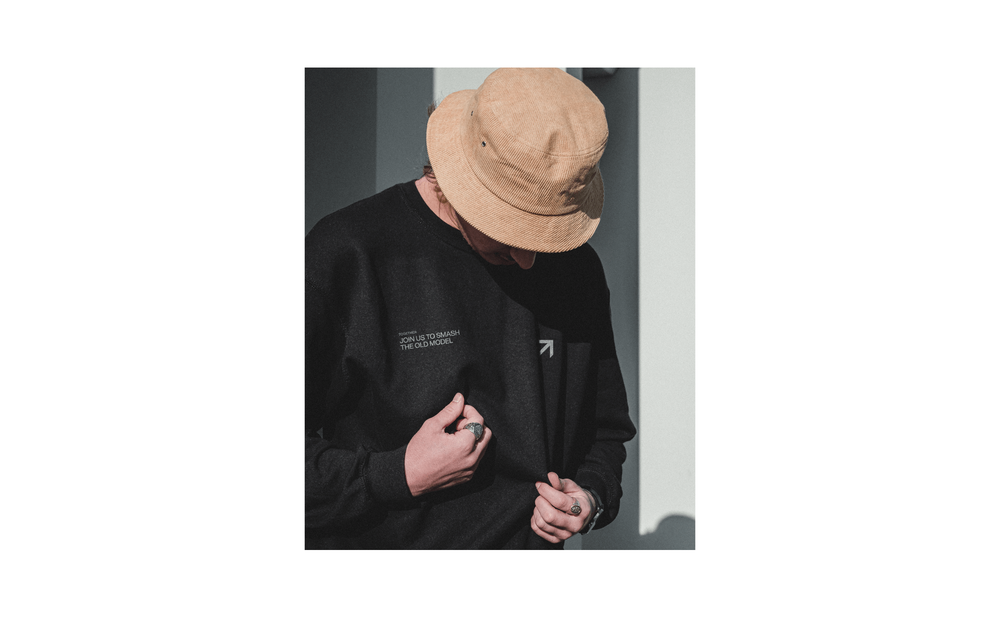
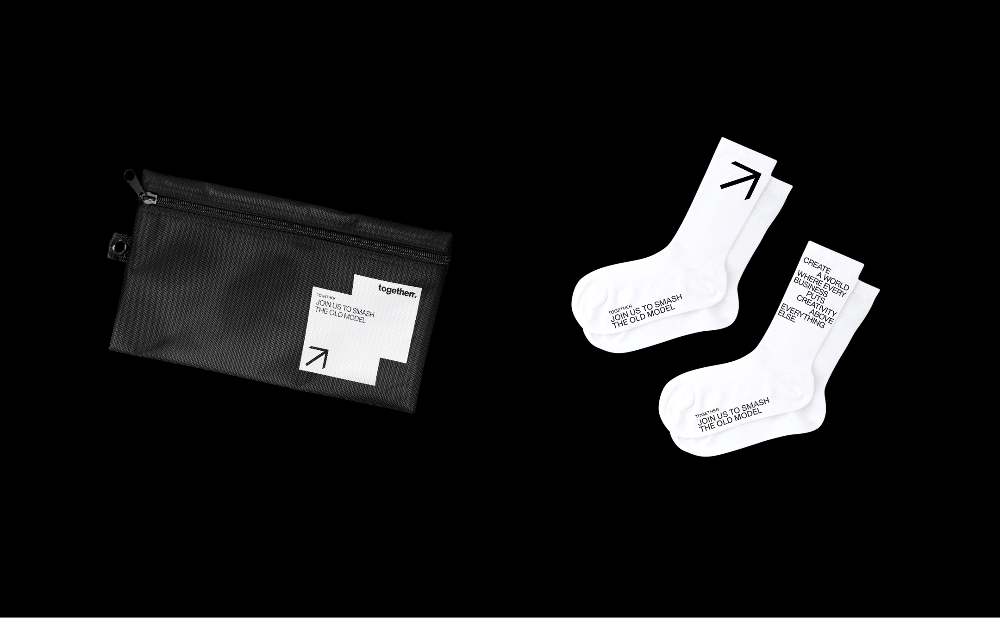
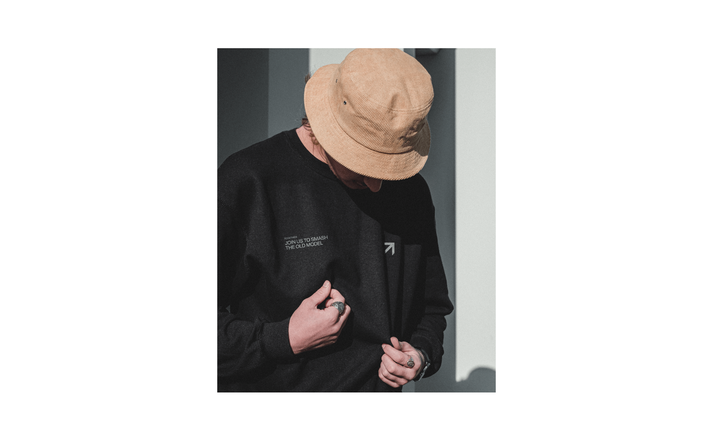
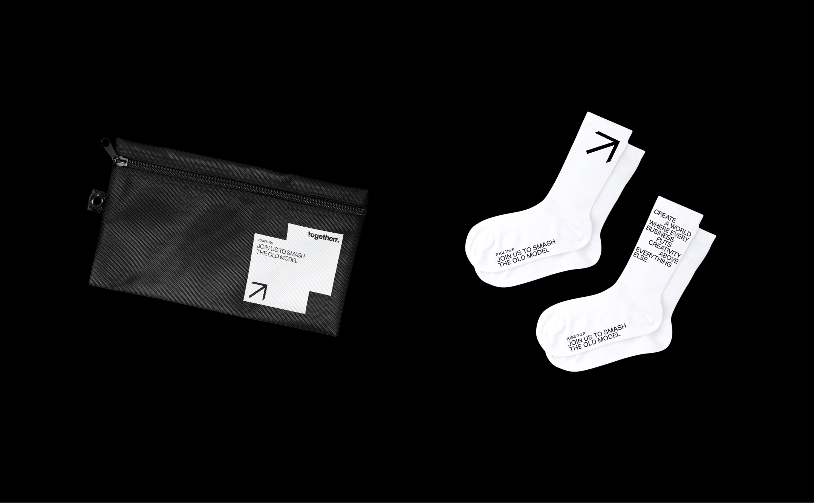
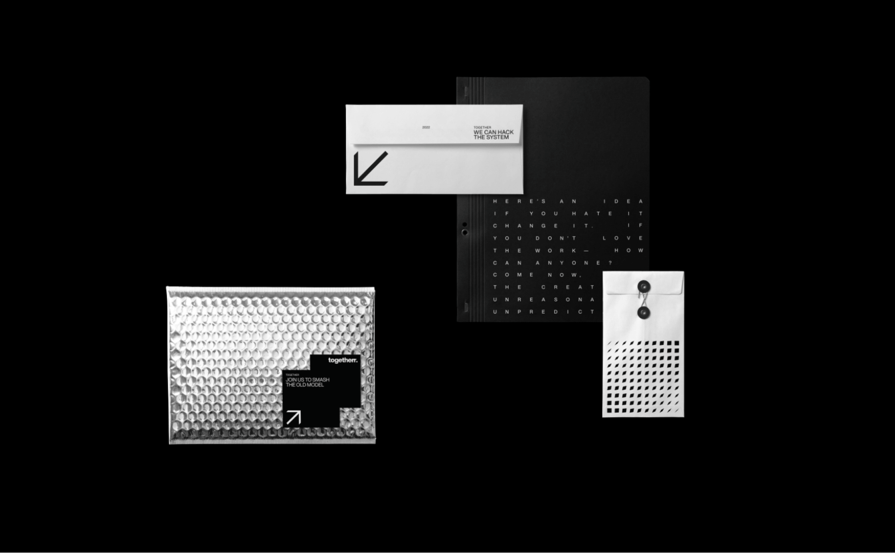
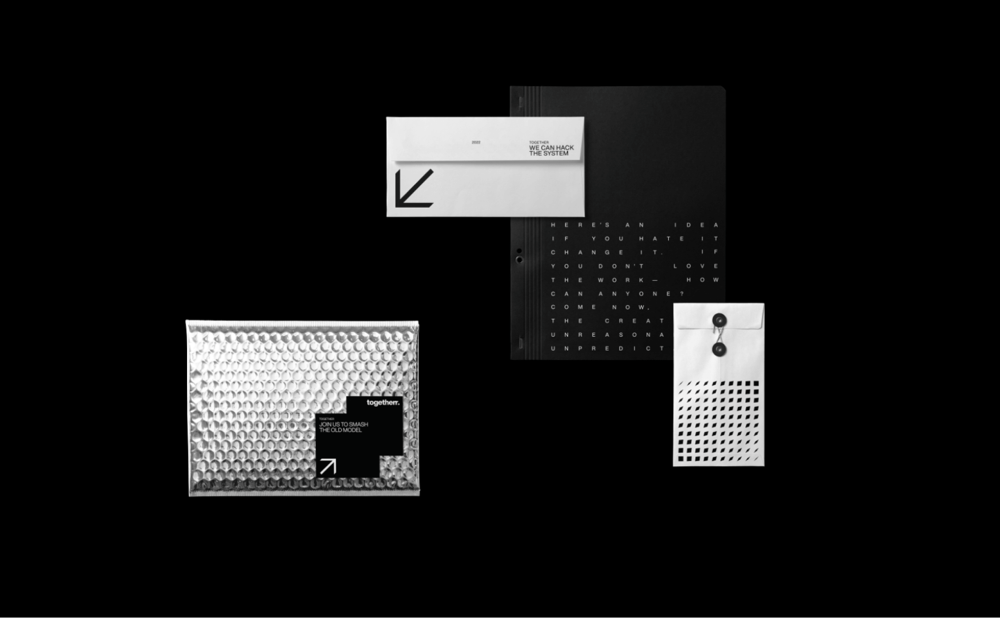
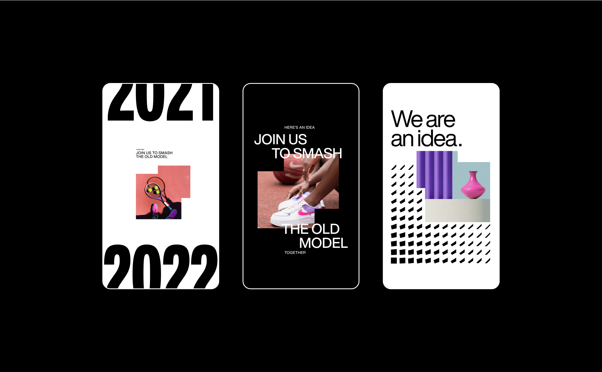
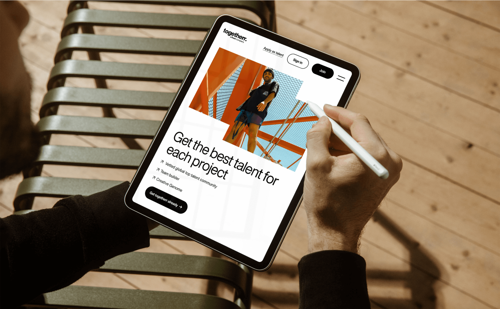
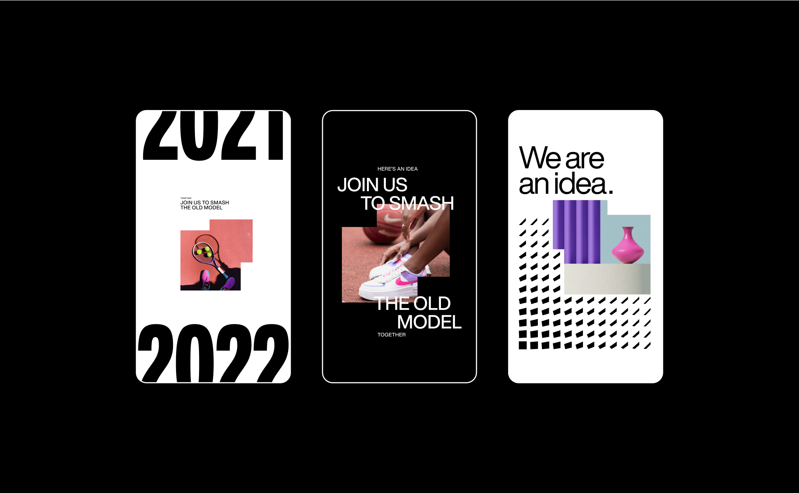
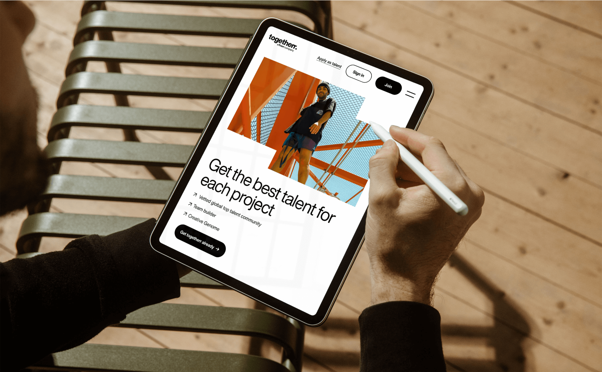

A 10-day Brand sprint for togetherr
fiverr reached out to us with an exciting challenge: develop an identity for their new platform, togetherr. this
platform is designed to match teams of marketing professionals with brand projects worldwide, enabling creative
minds to truly own their creativity.
togetherr’s brand speaks directly to creatives – people who often battle against systems, complexity, and a lack
of excitement and time. that’s why their communication is bold and straightforward, cutting through the noise with
no bs.
the design toolkit we selected for them is intentionally limited, yet versatile enough to allow for both bold and
minimal expressions. we based the identity on a black and white color palette and helvetica now, a fresh take on a
classic font deeply rooted in the advertising world. color comes into play through the creatives’ work, providing
them with the space and respect they deserve.
Client | togetherr by Fiverr
togetherr Design team | Nadav
Barkan, Alex Leibo, Or Harel, Amir Guy, Tamar Reshef Bezalel
Brand
development | Under, Inbal Lapidot Vidal, Anastasia Vlasenko


 



 

 


